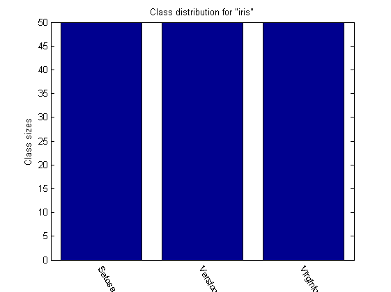
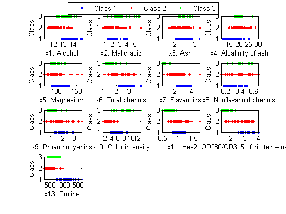
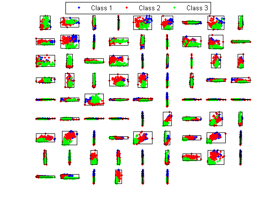

Visualization of the Wine Dataset
Wine dataset collects data of 3 classes of wine from various places at Italy. Some characteristics are listed below:
- Data size: 178 entries
- 3 classes
- Data distribution: 59, 71, and 48 entries for each class
- 13 features corresponding to the values from chemical analysis, no missing data: Alcohol, Malic acid, Ash, Alcalinity of ash, Magnesium, Total phenols, Flavanoids, Nonflavanoid phenols, Proanthocyanins, Color intensity, Hue, OD280/OD315 of diluted wines, Proline
In the dataset, Iris Setosa is easier to be distinguished from the other two classes, while the other two classes are partially overlapped and harder to be separated.
Contents
Class size distribution
We can display the data distribution among all classes, as follows:
DS=prData('iris');
[classSize, classLabel]=dsClassSize(DS, 1);
4 features 150 instances 3 classes
Plots of Classes vs. features
We can plot the classes w.r.t. each of the features:
DS = prData('wine');
dsProjPlot1(DS);
 2D scatter plot
We can have a scatter plot after projecting the dataset onto a 2D plane, as shown next.
clf;
DS = prData('wine');
opt.showAxisLabel=0;
opt.showAxisTick=0;
opt.showClassName=1;
dsProjPlot2(DS, opt);
 3D scatter plot
Theoretically, we can have another scatter plot after projecting the dataset onto a 3D space. However, for this dataset, it will have C(13, 3) = 286 subplots, which is beyond the capability of most computers.
Copyright 2011-2012 Jyh-Shing Roger Jang.